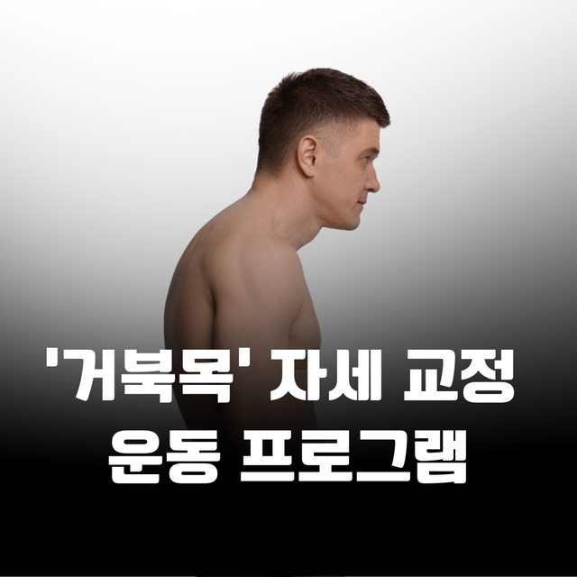
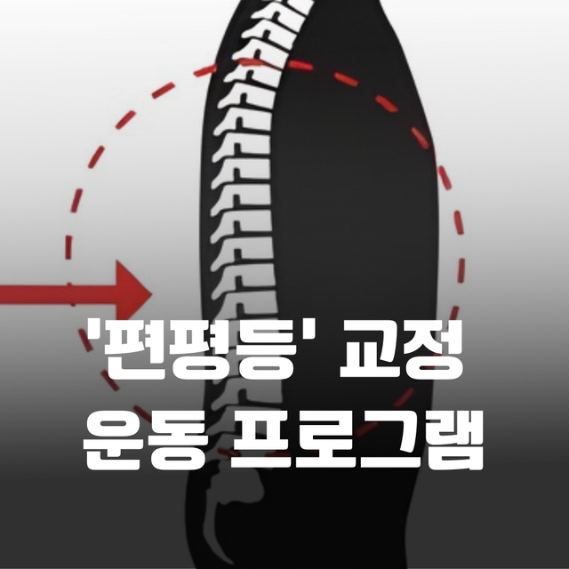
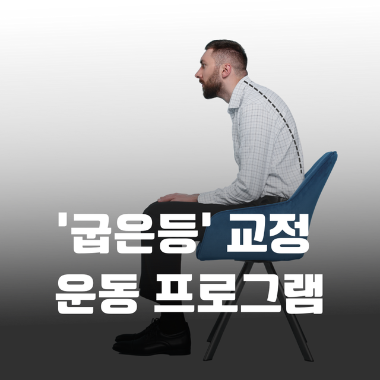
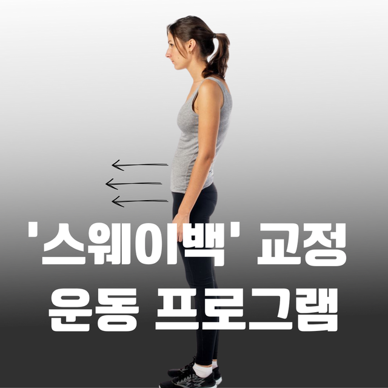
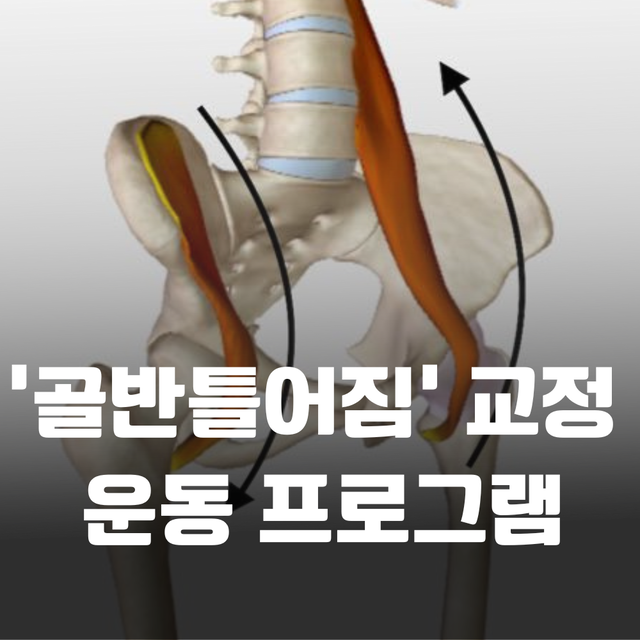
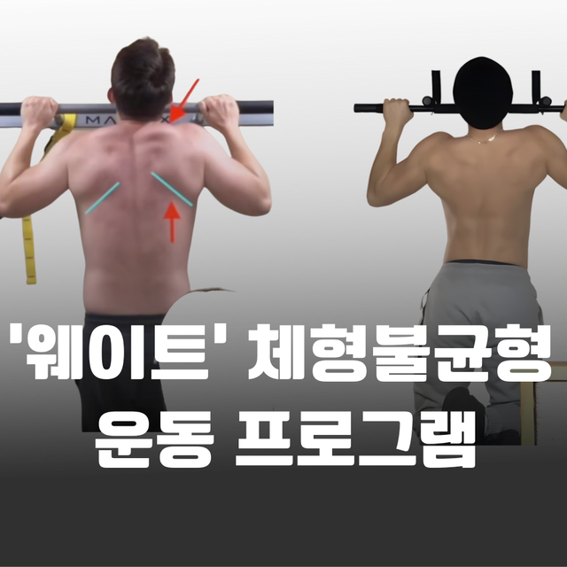
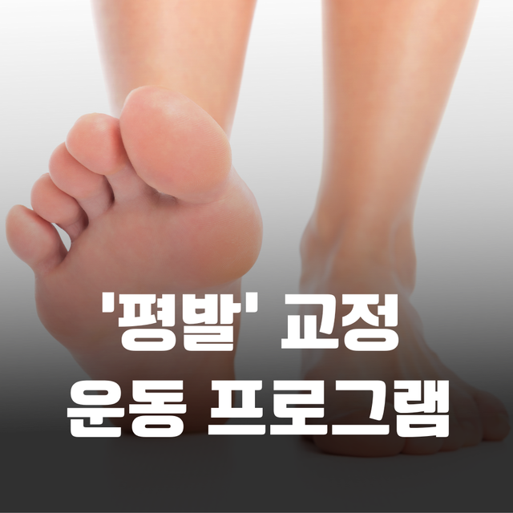
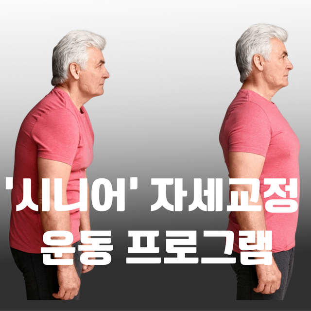

거북목 · 일자목
센터 안에서 펴 두고, 문을 나서면 다시 휴대전화를 봅니다. 실패의 원인은 운동 부족보다 일상의 집중 자세인 경우가 많습니다. 흉추와 날개뼈가 같이 움직이게 만들고, 한 시간에 한 번 패턴을 끊는 전략을 같이 짭니다.
자세가 무너진 분과 움직임이 막힌 분은 출발점이 다릅니다. 네 지점 모두 평가 후에 줄을 고릅니다.
정렬이 무너진 상태를 붙잡아 두는 프로그램이 아닙니다. 일상에서 다시 고를 수 있는 움직임을 만듭니다.

거북목 · 일자목
편평등
굽은등 · 흉추
스웨이백
골반 비대칭
웨이트 자세
측만 움직임
시니어 자세교정센터 안에서 펴 두고, 문을 나서면 다시 휴대전화를 봅니다. 실패의 원인은 운동 부족보다 일상의 집중 자세인 경우가 많습니다. 흉추와 날개뼈가 같이 움직이게 만들고, 한 시간에 한 번 패턴을 끊는 전략을 같이 짭니다.
허리를 과하게 펴는 교정은 또 다른 긴장을 만듭니다. 흉추 신전과 고관절 움직임이 살아나야 허리가 쉬어 갑니다.
어깨가 안 올라갈 때 어깨만 늘리면 목이 대신 씁니다. 흉추가 먼저입니다.
골반이 앞으로 밀리고 상체가 뒤에 남는 패턴입니다. 코어를 ‘힘주기’보다, 고관절이 제 위치에서 일하게 만듭니다.
스쿼트에서 한쪽으로 빠질 때, 원인은 허리보다 고관절 회전 제한인 경우가 많습니다.
무게를 올리기 전에 그 무게를 받을 수 있는 정렬인지를 봅니다. 보상 스쿼트·데드리프트는 근력이 아니라 패턴 문제입니다.
휘어진 뼈를 억지로 펴는 일이 아닙니다. 한쪽으로 쏠리던 힘이 분산되도록 호흡과 코어, 고관절을 연결합니다.
무리한 가동성 경쟁 없이, 일어나기·걷기·팔 뻗기에 필요한 안정성과 여유 범위를 먼저 회복합니다.
통증은 결과인 경우가 많습니다. 과하게 쓰인 관절을 쉬게 하려면, 안 쓰이던 관절이 다시 일하게 해야 합니다.
가동성만 늘리면 불안정해지고, 안정성만 강조하면 뻣뻣해집니다. 흉추·견갑골이 같이 움직인 뒤에야 어깨가 편해지는 경우가 많습니다.
목을 돌릴 때마다 뻐근하다면 목만의 문제가 아닐 수 있습니다. 급성 신경 증상이 있으면 병원 진료가 먼저입니다.
서 있는 자리에서 아치만 세우는 운동과, 걷는 중에 아치를 쓰는 운동은 다릅니다. 보조 깔창은 평가 후 필요 시에만 안내합니다.
허리를 스트레칭해도 반복된다면, 고관절이 안 움직여 허리가 대신 쓰는 패턴일 수 있습니다.
수술 후 무릎만 강화하면 고관절과 발목이 같이 떨어집니다. 일상과 스포츠로 돌아가려면 하지 전체가 다시 연결되어야 합니다.
근육을 ‘쓰려고’ 하기보다, 쓰일 수밖에 없는 상황을 만듭니다. 보행, 회전, 한 발 지지에서 무너지는 지점을 같이 봅니다.